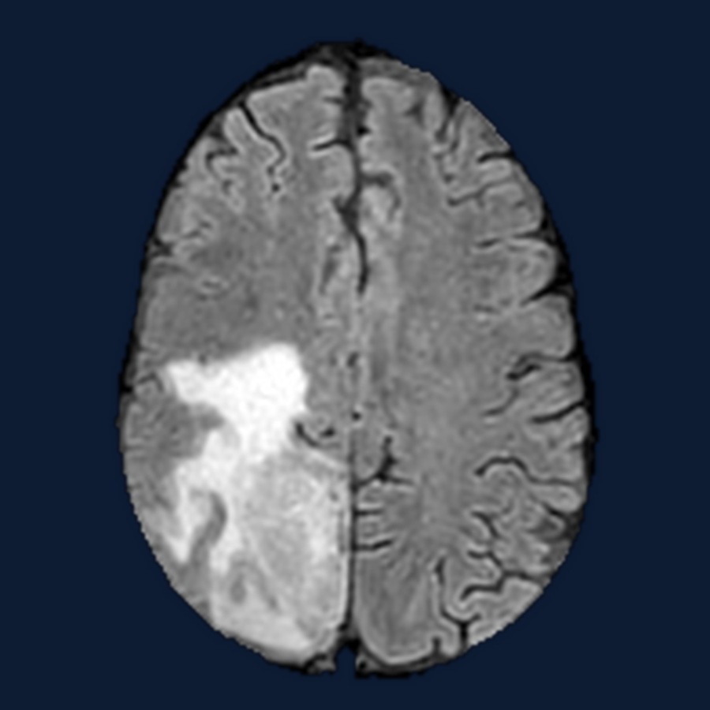
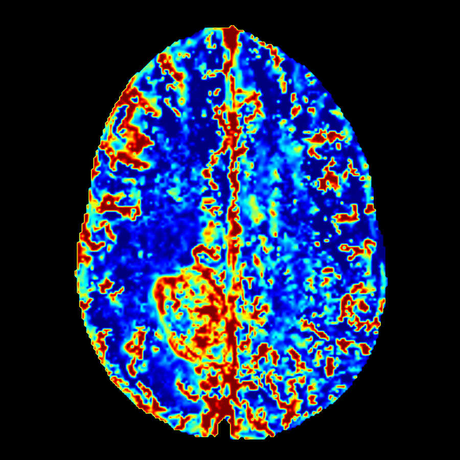

Ph.D. in Biomedical Engineering, IIT DelhiSep 2020 – Present
Centre for Biomedical Engineering · Advisor: Prof. Anup Singh, MedImg Lab
Thesis: Quantitative MRI and its Applications
PhD Scholar, Centre for Biomedical Engineering, IIT Delhi
Physics-aware deep learning for fast, reliable quantitative DCE-MRI in glioma that estimates tracer-kinetic parameters with calibrated uncertainty, independent of acquisition protocol, and extends to reduced contrast dose.


I am a PhD scholar at the Centre for Biomedical Engineering, IIT Delhi, where I work on quantitative MRI in the MedImg Lab. I am fortunate to be advised by Prof. Anup Singh.
My research spans tracer-kinetic modelling for dynamic contrast-enhanced MRI, physics-separable and probabilistic neural networks, diffusion-based posterior estimation, and brain tumour segmentation. The common thread is making quantitative MRI fast and dependable enough for routine clinical use: estimators that run in seconds rather than minutes, report their own uncertainty, and hold up when the acquisition protocol or the contrast dose changes.
I am particularly interested in the point where imaging physics meets learning. Rather than treating the scanner as a black box, I build models around the signal equations, which is what lets them transfer across acquisition protocols and, as one application, stay accurate at a quarter of the standard gadolinium dose. I also work on segmentation that generalises across tumour types and cohorts, and on perfusion-based mapping of tumour infiltration beyond the visible margin.
Before my PhD, I completed an M.Tech. in Biomedical Engineering at IIT Ropar, where I worked on histopathology image analysis with Dr. Deepti R. Bathula, and a B.Tech. in Electrical and Electronics Engineering, with earlier work in industrial automation.
Quantitative MRI | Physics-informed neural networks | Medical image analysis | Deep learning | Computer vision | Generative models and diffusion | Uncertainty quantification | Image segmentation | AI in healthcare